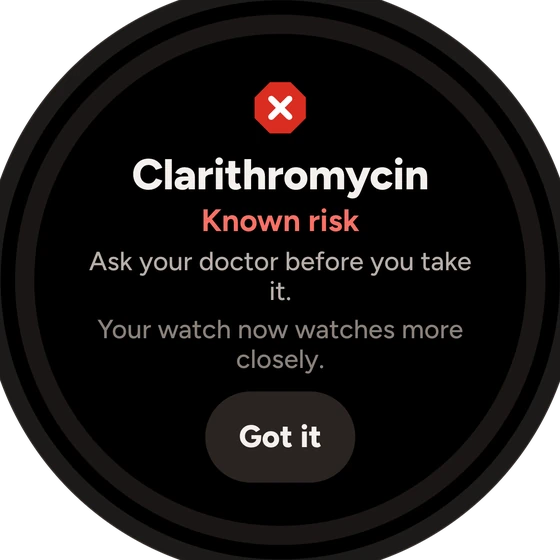

Known riskKlacid → clarithromycin Model output validatedHackYeah 2026 · Artificial Intelligence
Celia.ai
The data decides.
The AI explains.
An AI agent for people with Long QT syndrome. Say, scan or photograph a medicine and get one plain, checked answer, and what to ask your doctor instead.
Native HarmonyOS, phone + watch · by Double Oreo
A concrete use case
Ola has LQT2. The pharmacy hands her Klacid.
- 1She scans the box, or just asks
Barcode → clarithromycin. A photo is read on the device; a voice question works too.
- 2The list decides: Known risk
Same box, same answer, offline. Checked against her nadolol as well.
- 3The agent explains, in plain words
Why it matters for her, and what to ask about instead: amoxicillin, doxycycline.
- 4It follows through
If she takes it anyway, her watch tightens heart-rate limits for 72 h. The check lands in her doctor brief.

01 · Scan
Point at the barcode.

02 · Verdict
Colour, shape and word.
03 · Talk
The agent says it plainly.
See it working
Demo
Recorded on the HarmonyOS emulator (API 20) and a Huawei watch. Simulated heart data is labelled SIMULATED on screen.


Double Oreo
Kaloyan
The agent and voice
Georgi
The app and emergency
Mark
Data and the watch

Ask before
you take it.